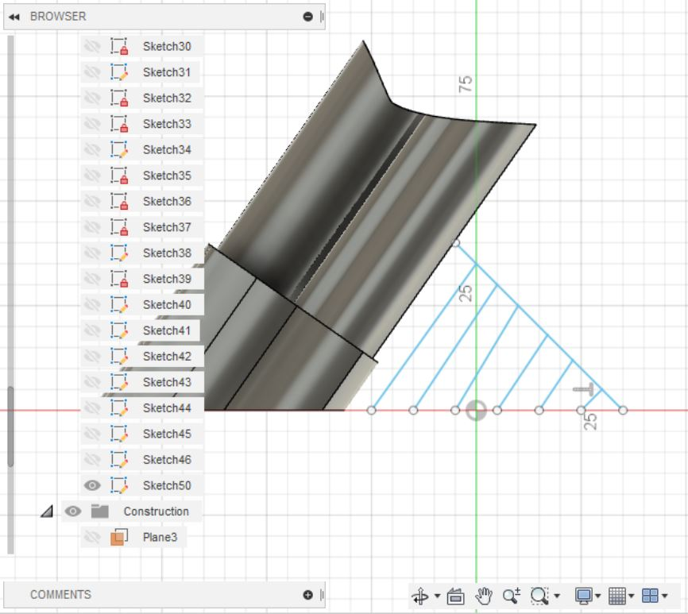
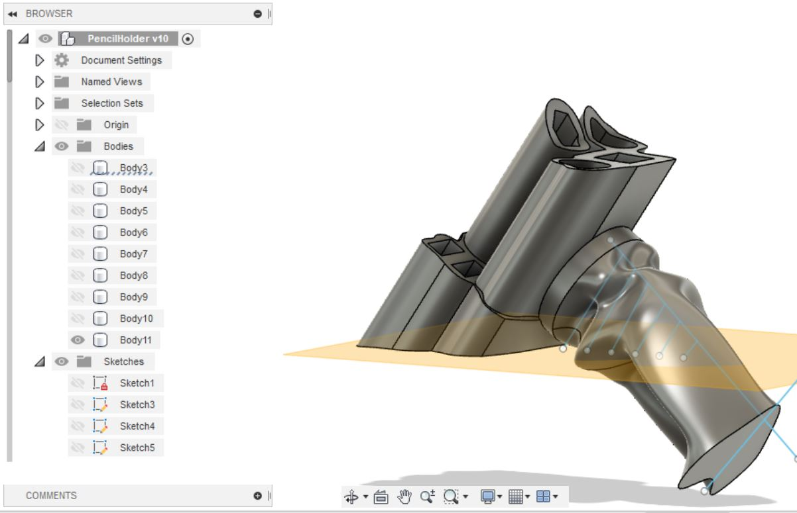

Project 3: 3D Scanning and printing
In this project I was supposed to use a design software to make something that could not be made subtractively, and 3D print my design with the constraints of maximum 4 hour printing time and the material available was 100g material. I started this project my searching on Google for cool 3D objects. I searched: "ideas for 3d printing" and I went on this website whose title was "50 Cool Things to 3D Print in January 2020". On this website I found this cool design of a pencil holder.

I decided to use this design as an inspiration. I used Fusion360 as my design software. I started by creating a box as big as I wanted my pencil holder to be. Then I started editing the box.
I used the fillet command to round the edges and created a sketch on the side of the box as can be seen as the blue surface.
In the sketch I used the spline command to create a curvy line on the box and then I extruded the material out.


Then I created a plane at an angle to be able to create a sketch on that plane. That way I could draw shapes at an angle with respect to my object.

Then I drew shapes on that sketch and used the extrude command in Fusion360 to cut those shapes into my object. I extruded them as far in as about 5 mm from the bottom.


Then I created more shapes into the same sketch as before.

Then I decided to select every area of the sketch excpect the areas that I wanted to become my pencil holders.
That way, when I extrude the area out of my object I create this kind of design.
I also wanted to add slots for usb ports so I googled the typical size of a usb 3.0 port and I found it on this Wikipedia page. The width was given as 12 mm and the height as 4.5 mm. So I decided to create box shaped holes in the dimension of 15x7mm and I extruded those holes 30 mm into the object.

Now I was happy with my design. The next thing I did was went on the teachers website and into the homepage of Project 3. There I found a video made by Arnar, an assistant teacher in this class where he went over the basic steps of 3D printing in the application Ultimaker Cura. The video can be found here, but it is in Icelandic. Now I noticed that I did not know how to export my fusion360 design into a format that is 3D printable and is compatable with Ultimaker Cura. So I went to youtube and found a 5 minute tutorial that showed me how to save my object as a stl file and how to edit its properties. The video can be found here.
Now I saved my pencil holder design as a stl file
I imported the stl file into Ultimaker Cura simply by dragging the file into the application. I followed the instructions from Arnars video and set the printer up in those particular settings. When everything was ready I sliced my design to see how much material it used and the printing time.

I noticed that I was using two much material and the printing time was way too long!! So I decided to cut out some material from my object.


However the printing time was still too large! So I had to cut out even more material!


I made one last change to the design to make sure it was within the time constraints.


However, now I realized that my pencil holder would most likely not be able to stand and was a bit too short. Thats why I made the penchil holders longer and I decided to create a support.

I drew different shapes on these planes and used the loft command in Fusion to create a wierd looking object


I then created a plane tangent to the bottom plate and cut the object with that plane.


Now my object is exactly 100g but the printing time is bit too long. However, since it is only a time constraint I got permission to do it.
The files
Press here to download the Fusion360 project!The workload
- 18. February: 1 hour searcing online for ideas and designing
- 19. February: 3 hours completing the design and making sure its printing time and material is within the constraints
- 20. February: 1 hour updating the website
- 21. February: 2 hours updating the design
- 22. February: 2 hours updating the design
- 24. February: 1 hours updating the website
- Total: 10 hours